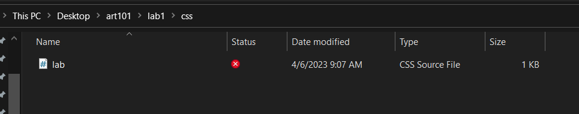
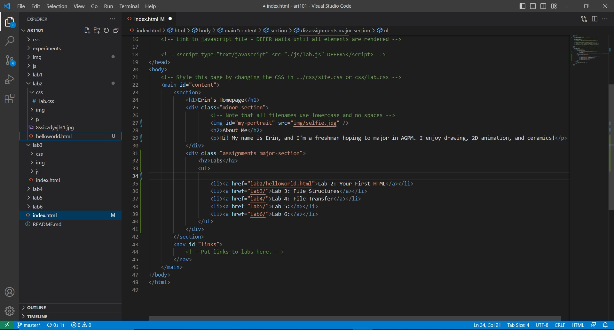
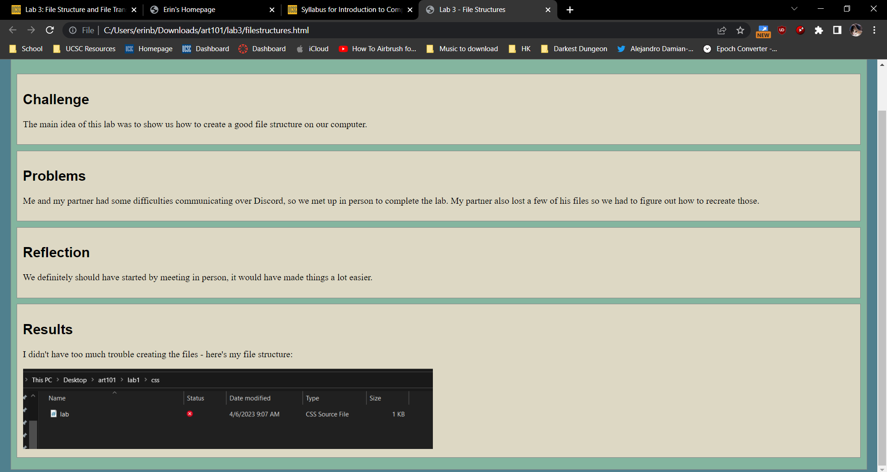
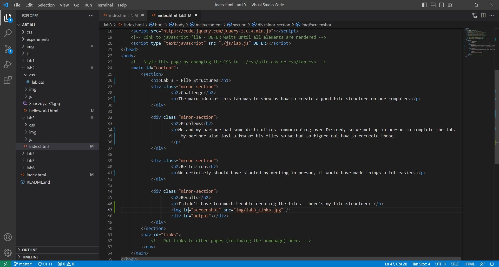

Lab 3 - File Structures
Challenge
The main idea of this lab was to show us how to create a good file structure on our computer.
Problems
Me and my partner had some difficulties communicating over Discord, so we met up in person to complete the lab. My partner also lost a few of his files so we had to figure out how to recreate those.
Reflection
We definitely should have started by meeting in person, it would have made things a lot easier.
Results
I didn't have too much trouble creating the files - here's my file structure:
 Folder structure and bulleted list
 Website and HTML code